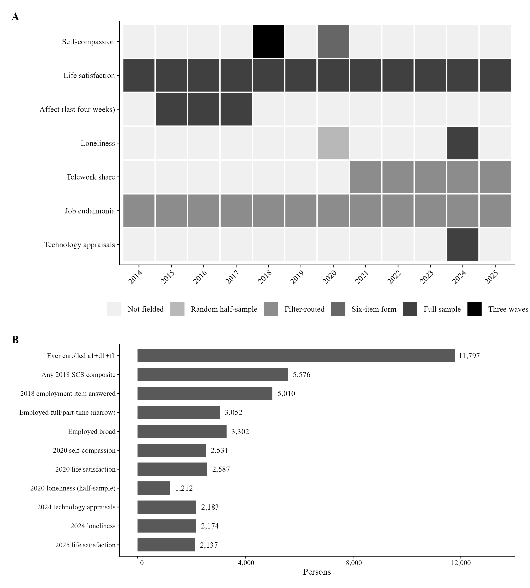
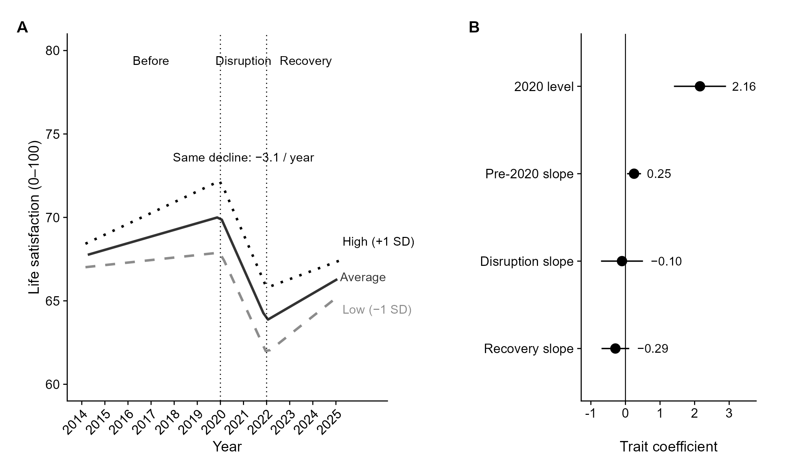
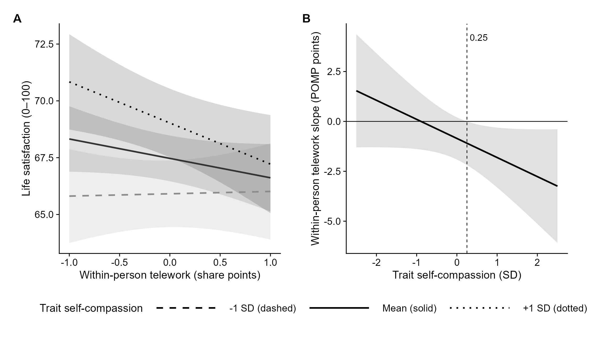
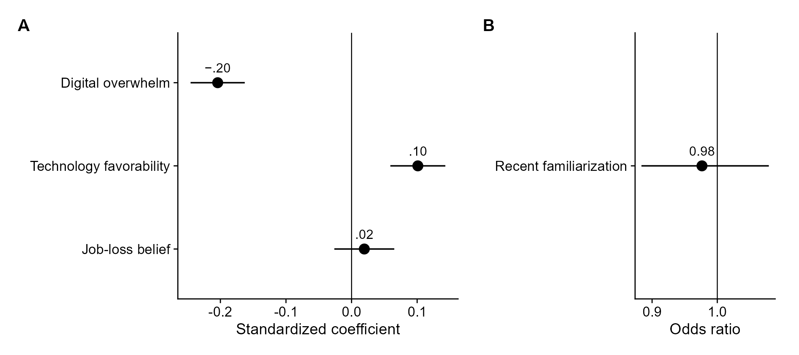

← Publication page · mjmonnot.github.io
Self-compassion, disruption and well-being at work in Germany · Research companion
German employees with more self-compassion in 2018 saw their life satisfaction fall about as much as employees with less during the COVID-19 disruption.
A study of the GESIS Panel, a national probability panel of German adults. It follows 3,052 adults who were employed in 2018. The panel asked about life satisfaction every year from 2014 to 2025. Self-compassion is a way of relating to your own difficulties, with kindness and without harsh self-judgment. Every result is an association in survey data. Nothing was assigned or changed by the researcher.
Three findings
- Life satisfaction fell 6.22 points on a 0 to 100 scale during the COVID-19 disruption, about equally for employees with more and less self-compassion.
- Employees with more self-compassion in 2018 felt less overwhelmed by digital technology in 2024 than employees with less. They were also less lonely in 2024, a link the study had not set out to test.
- Those 2024 links were carried by being less harsh on oneself. The self-caring items added nothing further. The links were smaller but still present after accounting for neuroticism, a general tendency toward negative emotion.
At a glance
What this means in practice
The decision
Employers look for personal resources that help staff come through disruption and new digital demands. The paper asks whether self-compassion, measured before COVID-19, played that protective part.
Read a self-compassion score as a marker of later well-being. It did not mark who was protected when the pandemic arrived. Life satisfaction fell about equally at higher and lower self-compassion. Years later, employees with more self-compassion in 2018 reported less loneliness and less digital overwhelm than employees with less. In exploratory models added at the reporting stage, both links were carried by the reverse-scored self-critical items (pp. 2, 37). The design is correlational, so it does not show what raising self-compassion would do.
What was found
- Life satisfaction fell 6.22 points on a 0 to 100 scale from 2020 to 2021, about equally at higher and lower self-compassion.
- More self-compassion in 2018 went with higher life satisfaction at the start of 2020 (2.16 points per SD, compared with average) and with less loneliness and less digital overwhelm in 2024.
- The 2024 links were the same size inside the care sectors as outside them (−0.20 points on 1 to 5 scales per SD more self-compassion, in both groups).
What to watch, as named in the paper
- Harsh self-judgment. If the prospective association runs through the self-critical items, programs aimed at reducing harsh self-judgment are the ones the panel evidence supports. None was tested here. The paper marks the component-specific estimates as exploratory (p. 7).
- Loneliness and feeling overwhelmed by technology. The paper notes that both matter at work, and the 2018 score improved out-of-sample prediction for these two outcomes.
What would sharpen the answer
- An experiment or intervention study that tests whether reducing self-criticism changes later loneliness or digital overwhelm.
- A randomized trial built around a workplace change, which would test the buffering the measured trait did not show.
- Scoring the self-caring items and the self-critical items separately, with a full measure of neuroticism.
The first two cards follow the paper’s Results and Discussion sections. The third card follows its Limitations and Future Directions sections. To discuss a measurement plan: matt@vocentive.com.
For writers and editors
In a German national panel, employees with more self-compassion in 2018 saw their life satisfaction fall about as much as employees with less during COVID-19.
- Paper
- “Buffer or Baseline? Trait Self-Compassion and Employee Well-Being Across Disruption, Telework, and Digital Demands in a National Probability Panel,” by Matthew J. Monnot (Vocentive).
- Kind of study
- Observational. The analytic sample is drawn from the 2013 recruitment cohort and from the 2016 and 2018 refreshes. Of the 3,052 adults employed in 2018, 1,611 have a 2014 life-satisfaction report. Self-compassion was measured in 2018 and 2020. Nobody was given a program or intervention. By the panel’s design, the 2020 self-compassion items were administered across four experimental presentation groups (p. 15), and 2020 loneliness was asked of a random half-sample (p. 16).
- Status
- Preprint posted on SSRN (2026). Not peer reviewed.
- Data
- Existing data from the GESIS Panel.pop Standard Edition (ZA5665, Version 62.0.0), used under a scientific-use agreement that prohibits sharing the respondent-level data. The author did not collect the data. The study was not preregistered; the paper states that the hypotheses were specified before the main models were estimated.
- Who was studied
- 3,052 adults in the German probability panel who were employed full or part time in 2018. Their average age was 47.36 years, and 47.7% were women.
- AI use
- The paper states: “During the preparation of this work the author used large language models accessed through Cursor (Anthropic Claude, xAI Grok, OpenAI GPT, and Google Gemini) to draft and revise text, write figure code, and check reported statistics; a word processor with Clippy and autocorrect; and statistical software, so that no coefficient was obtained by hand. The author reviewed, edited, and verified the output and takes full responsibility for the content. These tools are not authors.” The preprint carries no funding or competing-interest statement.
The study supports
- “Life satisfaction fell about as much among employees with more self-compassion as among employees with less during the 2020 to 2021 disruption.”Implied change −6.42 points at 1 SD above average and −6.02 points at 1 SD below, on a 0 to 100 scale; the intervals overlap.
- “Employees with more self-compassion in 2018 felt less overwhelmed by digital technology in 2024 than employees with less.”−0.20 points on a 1 to 5 scale per SD more self-compassion, 95% CI [−0.24, −0.16], after accounting for earlier well-being, age, education and technology affinity.
- “Employees with more self-compassion in 2018 were less lonely in 2024 than employees with less.”−0.19 points on a 1 to 5 scale per SD more self-compassion, 95% CI [−0.24, −0.14], 819 people. The paper reports this link as estimated; it was not a planned test.
It does not support
- “Self-compassion protected employees from the pandemic.”The trait was not associated with the size of the 2020 to 2021 decline (−0.10 points per year per SD more self-compassion, 95% CI [−0.71, 0.51]).
- “Self-compassion made remote work easier.”The telework test was not supported (p = .076), and its direction ran opposite to the predicted cushioning.
- “Training self-compassion will reduce loneliness.”The design is correlational and no program was tested.
- “Self-compassion made people more likely to try new technology.”The odds of recently getting familiar with a new digital technology did not differ (odds ratio 0.98 per SD more self-compassion, 95% CI [0.88, 1.08]).
Monnot, M. J. (2026). Buffer or baseline? Trait self-compassion and employee well-being across disruption, telework, and digital demands in a national probability panel [Preprint]. SSRN. https://doi.org/10.2139/ssrn.7622018
Questions, or a quote: Matthew J. Monnot, matt@vocentive.com.
1 · Life satisfaction fell by about the same amount at every level of self-compassion
The paper fitted one growth curve to yearly life satisfaction, on a 0 to 100 scale. The curve has a segment for the 2020 to 2021 disruption between a segment before 2020 and a recovery segment from 2022. The paper then asked whether self-compassion measured before the pandemic went with the height of the curve or with the size of the fall. Pick a view.
At average covariates, life satisfaction stood at 70.05 points on the 0 to 100 scale at the start of 2020 (95% CI [68.35, 71.75]). It fell 3.11 points per year through the disruption, an implied loss of 6.22 points from 2020 to 2021 (95% CI [−7.22, −5.22]), then rose 0.81 points per year from 2022. Self-compassion was also unrelated to loneliness in 2020 (−0.06 points on a 1 to 6 scale per SD more self-compassion, 95% CI [−0.16, 0.03], 1,212 people). Bayes factors favored the models without these links, by ratios of 51.52 for the disruption slope and 18.42 for 2020 loneliness. The disruption coefficient stayed near zero with the 2018-only score, the raw 2018 score, design weights, the 2018 recruits left out, and a broader employment definition (all p ≥ .507).

Select the figure to enlarge it.

Select the figure to enlarge it.
2 · Telework and self-compassion
From late 2021 the panel asked what share of working time people spent working from home, on a 1 to 5 scale (share points). The paper asked whether life satisfaction dipped less in the years a person teleworked more if that person was higher in self-compassion. Pick the overall test or one level of self-compassion.
In the model without the interaction, a year of more telework than a person’s own average was not associated with life satisfaction (−0.85 points per share point, 95% CI [−1.91, 0.21], p = .118). A Bayes factor of 12.28 favored the model without the interaction. Telework also showed no link with 2024 loneliness (819 people) or with learning and personal development at work (735 people).

Select the figure to enlarge it.
3 · Digital technology in 2024
In early 2024 the panel asked about digital technology. The paper tested four outcomes, after accounting for earlier well-being, age, education and technology affinity. Pick an outcome.
The paper’s Figure 4, below, plots these coefficients with their 95% intervals.
The paper counts two of the four outcomes as supported. A refit with a bias-correcting two-step estimator gave nearly identical standardized coefficients (overwhelm −.22 and favorability .11). For overwhelm versus familiarization, the paper reads the contrast this way: feeling overwhelmed is a judgment about oneself, and familiarizing oneself with a new technology is an action. Overwhelm went with self-compassion; familiarization did not.

Select the figure to enlarge it.
4 · Loneliness and the self-critical items
Self-compassion was associated with lower loneliness in 2024 (−0.19 points on a 1 to 5 scale per SD more self-compassion, 95% CI [−0.24, −0.14], 819 people), the largest association in the study, though the paper did not set out to test it. The self-compassion scale mixes self-caring items (kindness, common humanity, mindfulness) with reverse-scored self-critical items, and the two sets correlated only r = .26. After the planned tests, the paper entered both sets together. Pick an outcome.
The total self-compassion score correlated r = .98 with the self-critical items and r = .38 with the self-caring items, so the paper reads its total-score results as, in effect, results for low self-criticism. Among 2,843 people with a known 2018 industry, the loneliness and overwhelm links were the same inside the care sectors (704 people) as elsewhere (2,139 people), at −0.20 points on 1 to 5 scales per SD more self-compassion in both groups.
5 · Prediction in new cases
The paper also checked whether the 2018 score helped predict 2024 outcomes for people the model had not seen, across 10 repeats of 5-fold cross-validation (1,528 to 1,596 complete cases per outcome).
Adding the 2018 self-compassion score improved prediction of 2024 loneliness by .036 of explained variance, compared with baseline covariates alone.
For digital overwhelm the gain was .008. For the other three 2024 outcomes, the gains were .001 or less in absolute value.
How to read this. The numbers are gains in out-of-fold R², the share of variance explained in held-out cases. Baseline covariates alone explained .099 to .268, and the across-repeat SDs were at most 0.004. Scoring the 12 items separately gave gains of .056 for loneliness and .021 for overwhelm. This analysis was added at the reporting stage.
6 · What the study found, in order
- The scale split in two. A one-factor model of the 12 self-compassion items fit poorly (CFI = .848). A model separating the self-caring items from the self-critical items fit better (CFI = .937), with the two factors correlating only r = .32 to .39. The paper kept the planned total score and checked the consequence later.
- No cushioning in the disruption (Hypothesis 1, not supported). Self-compassion went with a higher 2020 level (2.16 points per SD, 95% CI [1.40, 2.91]) and was unrelated to the disruption slope (−0.10 points per year per SD, p = .746) or to 2020 loneliness (p = .166).
- No cushioning in telework (Hypothesis 2, not supported). The interaction was −0.96 points per share point per SD (p = .076), opposite in direction to the prediction.
- Loneliness in 2024 (not a planned test). −0.19 points on a 1 to 5 scale per SD more self-compassion (95% CI [−0.24, −0.14]); zero-order r = −.36 with the 2018 score.
- Digital technology in 2024 (Hypothesis 3, partial support). Per SD more self-compassion, overwhelm was lower by .20 SD and favorable views were higher by .10 SD (standardized). No link with the job-loss belief (p = .405) or with trying new technology (p = .641).
- Low self-criticism carried the links (added at the reporting stage). Standardized coefficients for the self-critical items were −.30 for loneliness and −.21 for overwhelm; −.24 and −.17 with the six-item neuroticism control.
- Care sectors. The loneliness and overwhelm links were the same size inside and outside the care sectors (interactions p = .976 and .995).
For specialists
The study design and the main reported estimates in one place. Sources are the preprint’s Method and Results, with Tables 1 to 5 and Figures 1 to 4.
| Design | GESIS Panel.pop Standard Edition (ZA5665, Version 62.0.0), a probability-based mixed-mode (web and mail) panel of German-speaking adults, register-recruited at ages 18 to 70 in three cohorts between 2013 and 2018. Predictor: Self-Compassion Scale Short Form, SCS-SF (12 items, 1 to 5) in three 2018 waves plus a six-item 2020 form, entered as second-order trait factor scores. Observational; not preregistered. Bayes factors and cross-validation were added at the reporting stage, as were the two-factor and component models. |
|---|---|
| Sample | 11,797 ever enrolled; 5,576 with a 2018 SCS-SF score; 5,010 answered the 2018 employment item; analytic N = 3,052 employed full or part time (3,302 under the broad definition). Mean age 47.36 (SD = 11.24); 47.7% women; 40.8% with Abitur. 2,137 with 2025 life satisfaction (70% retention). Retained and absent panelists differed by |d| = 0.00 to 0.20. |
| Measurement | One-factor CFI = .848, RMSEA = .057; correlated two-factor CFI = .937, RMSEA = .037; factor r = .32 to .39. Trait factor explained 81% to 86% of occasion-factor variance. ω = .75 to .77 in 2018; ω = .52 for the 2020 form. Scalar invariance into 2020 partial at best. |
| Hypothesis 1 | Not supported (Table 3). Piecewise growth, life satisfaction on 0 to 100 POMP: level at 2020 knot 70.05 [68.35, 71.75]; pre-2020 slope 0.40 per year [−0.10, 0.90]; disruption −3.11 per year [−3.61, −2.61]; recovery 0.81 per year [0.46, 1.15]. Trait paths, per SD of the trait (level in points; slopes in points per year): level b = 2.16 [1.40, 2.91], β = .14; pre-2020 0.25 [0.05, 0.45], p = .015; disruption −0.10 [−0.71, 0.51], p = .746; recovery −0.29 [−0.69, 0.11], p = .154. 2020 loneliness (1 to 6 scale) b = −0.06 [−0.16, 0.03], n = 1,212. BF01 = 51.52 and 18.42. |
| Hypothesis 2 | Not supported (Table 4). Random-slope multilevel model, 3,484 person-years from 1,080 persons; telework ICC .75. Within-person telework −0.85 points per share point [−1.91, 0.21]; trait 1.58 points per SD [0.49, 2.68]. Cross-level interaction b = −0.96 [−2.01, 0.10], p = .076; simple slopes 0.10 [−1.39, 1.59] at −1 SD and −1.81 [−3.31, −0.31] at +1 SD; Johnson-Neyman bound 0.25 SD. BF01 = 12.28. Frequency-weighted model p = .037 without the random slope and p = .059 with it. |
| 2024 loneliness | Person-level b = −0.19 points on the 1 to 5 scale per SD [−0.24, −0.14], n = 819; not a hypothesized path. Zero-order r = −.36 (Table 1). Out-of-fold ΔR² = .036. |
| Hypothesis 3 | Partial support (Table 5); outcomes on 1 to 5 agreement scales, per SD of the trait. Overwhelm b = −0.20 [−0.24, −0.16], β = −.20; favorability 0.06 [0.04, 0.09], β = .10 (α = .29); job-loss belief 0.02 [−0.03, 0.07], p = .405; familiarization OR = 0.98 [0.88, 1.08], n = 2,066. BF10 = 1.44 × 1019 and 3,179.03; BF01 = 38.01 and 40.73. The job-loss item was hypothesized on its registry label (“use for job retention”); its stem measures a national job-loss belief. |
| Components | Trait r = .98 with the reverse-scored self-critical composite and .38 with the self-caring composite. Loneliness (n = 2,174): self-critical β = −.297, self-caring β = .010; −.275 with the two-item BFI-10 control, −.239 with the six-item BFI-2 scale (n = 1,616), −.295 weighted. Overwhelm (n = 2,183): −.213; −.177; −.169; −.207 weighted. Two-factor H2 interaction for the reversed negative composite b = −1.24 [−2.39, −0.09], p = .034. |
| Limits | Correlational design. Two-item neuroticism control is weak (α ≈ .47 to .54). Single-item life satisfaction changed format in 2021; loneliness anchors changed between 2020 and 2024. Favorability α = .29. Telework not measured in 2020. Three prespecified sensitivity models were not obtained. Missing data assumed missing at random. |
| Materials | Analyses in R 4.5.2 (lavaan, lme4). The paper states that analysis code will be posted in a persistent public repository when the article is published. GESIS data are available under a scientific-use agreement. No respondent-level data are hosted on this page. |
What this site does and does not show
- No respondent-level data are hosted here. Every estimate, interval and sample size on this page is a published aggregate from the preprint. Nothing is estimated in the browser.
- There is no “of every 100 people” picture. A conversion of that kind is not reported in the paper and would carry no interval ends, so the page gives the published numbers.
- No intervention is evaluated. Whether reducing self-criticism would change later loneliness or digital overwhelm has not been tested.
Tools used
Analyses: R 4.5.2, as reported in the preprint.